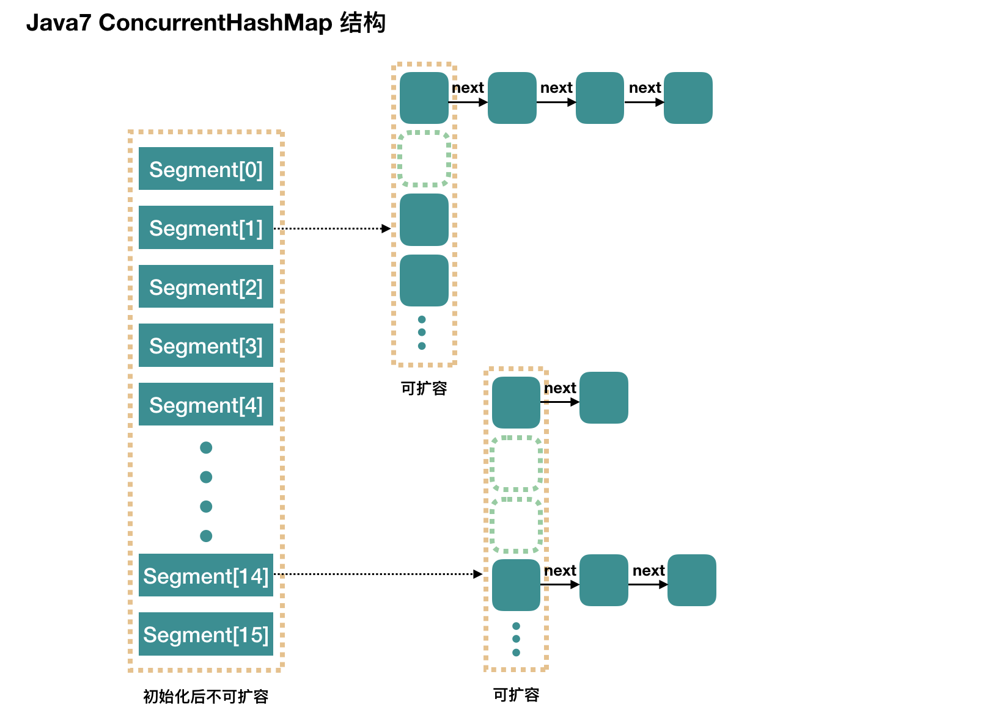

ConcurrentHashMap详解
为什么 HashTable 慢
hashTable之所以慢是因为内部的实现使用了Synchronized关键字对put等操作加锁，而Synchronized加锁是直接对整个对象加锁，也就是说put等修改Hash表的操作直接锁住了整张表，所以效率较低。
ConcurrentHashMap(JDK 1.7)
在JDK 1.5-1.7版本，Java使用了分段锁的机制实现了ConcurrentHashMap。
简而言之，ConcurrentHashMap在对象中存储了一个Segment数组，将整个Hash表划分为多个分段；而每个Segment类似于一个HashTable。这样一来，在进行put等操作时首先会根据Hash算法定位到元素属于哪个Segment，然后对该Segment加锁即可，这样就避免了对整张表加锁，提升了并发性能。
数据结构
整个ConcurrentHashMap由多个Segment组成。Segment通过继承ReetrantLock来加锁，所以每次需要加锁只需要锁住一个Segment即可。

concurrentcyLevel：Segment的数量，默认为16。也就是说，理论上这时ConcurrentHashMap可以支持最多16个线程同时写。这个值可以在初始化的时候设置为其他值，但是初始化之后就不可扩容了。
初始化
initialCapacity：初始容量，这个值指的是整个ConcurrentHashMap的初始容量，实际操作时要平均分给每个Segment。loadFactor：负载因子，给每个Segment使用。
1 | public ConcurrentHashMap(int initialCapacity, |
初始化完成，我们得到一个Segment数组。假设使用无参构造器，那么初始化完成后：
Segment数组长度默认为16，不可以扩容。Segemnt[i]默认大小为2，负载因子是0.75，所以初始阈值为1.5，也就是说插入第一个元素不会扩容，插入第二个会触发第一次扩容。
put
1 | public V put(K key, V value) { |
Segment数组内部使用数组+链表的结构。
1 | final V put(K key, int hash, V value, boolean onlyIfAbsent) { |
前面提到，ConcurrentHashMap初始化的时候只会初始化第一个槽，对于其他槽，在插入第一个值的时候才初始化。
所以这里需要考虑并发的问题，因为有可能有多个线程同时初始化同一个槽。
1 | private Segment<K,V> ensureSegment(int k) { |
前面进行put操作时需要获取独占锁，首先会调用tryLock()尝试获取锁，如果失败，就进入到scanAndLockForPut方法获取锁。
1 | private HashEntry<K,V> scanAndLockForPut(K key, int hash, V value) { |
该方法要么获取到了锁要么进入阻塞队列等待锁。
rehash
前面提到，Segment数组是不能扩容的，扩容的是Segment数组内部的HashEntry<K, V>[]结构。扩容后，容量变为原来的两倍。
这个方法不需要考虑并发，因为需要扩容的条件是put元素时发现元素个数超过了阈值，而这个时候put操作已经获取到了独占锁。
1 | // node是扩容之后要添加的元素 |
get
相比于put，get就简单多了。
- 首先计算
hash值，找到Segment数组中具体的位置。 - 再根据
hash值计算出Segment内部数组中具体的位置。 - 遍历链表寻找即可。
1 | public V get(Object key) { |
可以看到get方法是没有加锁的，那么如果get的时候对应Segment数组发生了put或者remove怎么办呢？
put：- 初始化
Segment数组：这个是通过CAS保证的。 - 添加节点的时候是添加到表头的。所以如果
get操作已经遍历到了链表中间，那么没有影响；如果get发生在之后，那么需要保证新添加的节点也需要被读取到，这是通过UNSAFE.putOrderedObject来保证的。 - 扩容时：扩容其实是创建了一个新数组，然后迁移数据。所以
get先行的话，就是在扩容之前的数组上查询；如果put先行，那么就是通过volatile来保证可见性的。
- 初始化
remove：get需要遍历链表，但是remove会破坏链表。- 如果
remove的节点get操作已经过去了，那就不会有影响。 - 如果
remove先破坏了一个节点，那么：如果该节点是头节点，那么需要把头节点的next设置为数组该位置的元素，使用UNSAFE操作数组；如果不是头节点，那么会把要删除节点的后继节点连接到前驱节点中，使用volatile保证可见性。
ConcurrentHashMap(JDK 1.8)
在JDK 1.8中，ConcurrentHashMap完全摒弃了分段锁的机制，而是选择了类似于HashMap的数组+链表+红黑树的方式实现的，加锁采用CAS和synchronized实现。
数据结构

其结构和HashMap基本一致。
初始化
1 | public ConcurrentHashMap() { |
该方法通过提供初始容量，计算出sizeCtl = (1.5 * initialCapacity) + 1，然后向上取最近的2的n次方。
put
1 | public V put(K key, V value) { |
初始化数组函数：initTable：
1 | private final Node<K,V>[] initTable() { |
链表转红黑树：
1 | private final void treeifyBin(Node<K,V>[] tab, int index) { |
扩容方法
1 | // size传进来时已经翻倍 |
数据迁移方法
1 | private final void transfer(Node<K,V>[] tab, Node<K,V>[] nextTab) { |
get
1 | public V get(Object key) { |